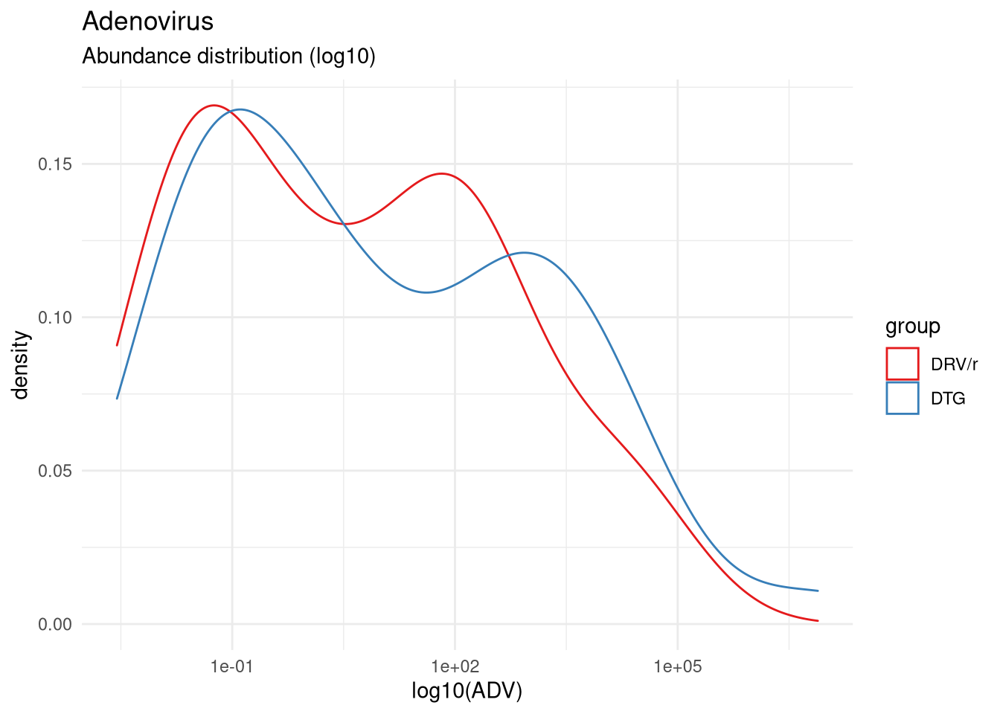
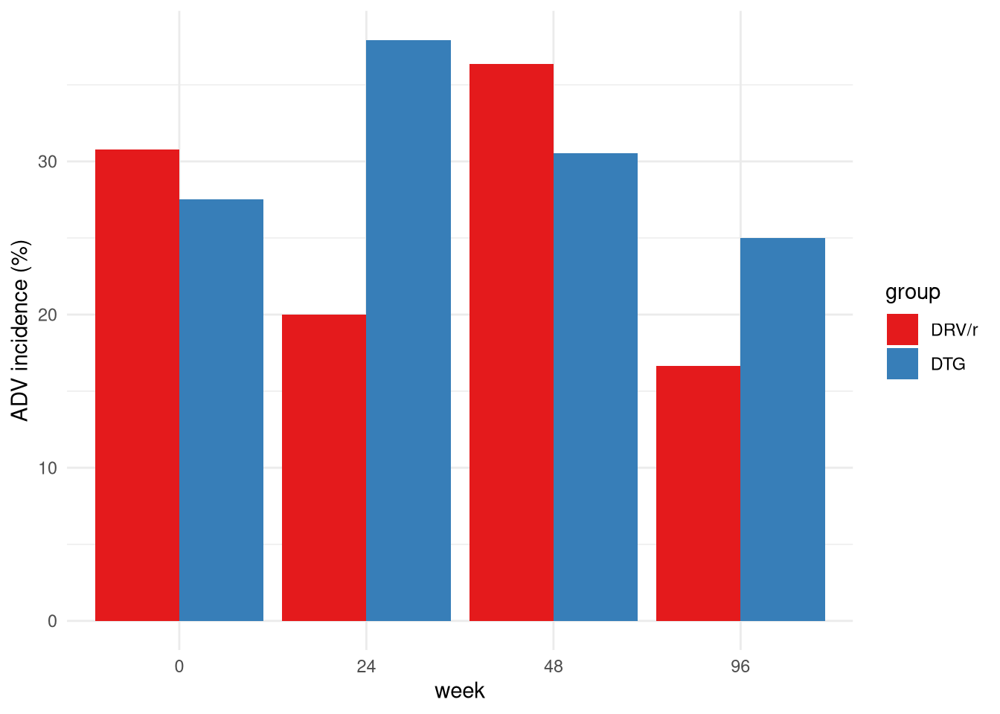

Adenovirus Analisis
Marc Noguera
5/3/2022
Last updated: 2022-05-24
Checks: 5 2
Knit directory: advanz4/
This reproducible R Markdown analysis was created with workflowr (version 1.7.0). The Checks tab describes the reproducibility checks that were applied when the results were created. The Past versions tab lists the development history.
The R Markdown file has unstaged changes. To know which version of the R Markdown file created these results, you’ll want to first commit it to the Git repo. If you’re still working on the analysis, you can ignore this warning. When you’re finished, you can run wflow_publish to commit the R Markdown file and build the HTML.
Great job! The global environment was empty. Objects defined in the global environment can affect the analysis in your R Markdown file in unknown ways. For reproduciblity it’s best to always run the code in an empty environment.
The command set.seed(20211203) was run prior to running the code in the R Markdown file. Setting a seed ensures that any results that rely on randomness, e.g. subsampling or permutations, are reproducible.
Great job! Recording the operating system, R version, and package versions is critical for reproducibility.
- read_data
To ensure reproducibility of the results, delete the cache directory 505_Adenovirus_Analysis_cache and re-run the analysis. To have workflowr automatically delete the cache directory prior to building the file, set delete_cache = TRUE when running wflow_build() or wflow_publish().
Great job! Using relative paths to the files within your workflowr project makes it easier to run your code on other machines.
Great! You are using Git for version control. Tracking code development and connecting the code version to the results is critical for reproducibility.
The results in this page were generated with repository version 28f4f36. See the Past versions tab to see a history of the changes made to the R Markdown and HTML files.
Note that you need to be careful to ensure that all relevant files for the analysis have been committed to Git prior to generating the results (you can use wflow_publish or wflow_git_commit). workflowr only checks the R Markdown file, but you know if there are other scripts or data files that it depends on. Below is the status of the Git repository when the results were generated:
Ignored files:
Ignored: .RData
Ignored: .Rhistory
Ignored: .Rproj.user/
Ignored: analysis/.Rhistory
Ignored: analysis/505_Adenovirus_Analysis_cache/
Ignored: data/mre.rds
Untracked files:
Untracked: analysis/figure/
Unstaged changes:
Modified: analysis/505_Adenovirus_Analysis.Rmd
Modified: code/LMM.R
Note that any generated files, e.g. HTML, png, CSS, etc., are not included in this status report because it is ok for generated content to have uncommitted changes.
These are the previous versions of the repository in which changes were made to the R Markdown (analysis/505_Adenovirus_Analysis.Rmd) and HTML (docs/505_Adenovirus_Analysis.html) files. If you’ve configured a remote Git repository (see ?wflow_git_remote), click on the hyperlinks in the table below to view the files as they were in that past version.
| File | Version | Author | Date | Message |
|---|---|---|---|---|
| Rmd | 28f4f36 | cblazquez | 2022-05-23 | started with ADV+Entero analysis |
| html | 28f4f36 | cblazquez | 2022-05-23 | started with ADV+Entero analysis |
mymre <- mymre <- aws.s3::s3readRDS(bucket = "s3://mistral-wp6-advanz4", object = "metagenome/WMGS/MREObject.rds")
# metadata <-get_meta(mymre)
cat_df <-
here::here("Metadata", "CategoricalVariables.txt") %>%
read.delim(., header = T)
cat_vector <- cat_df %>%
pull(CategoricalVariable)
long_var <- here::here("Metadata", "LongitudinalVariables.txt") %>%
read.delim(., header = T) %>%
pull(LongitudinalVariable)
link_var <- here::here("Metadata", "LongitudinalVariables.txt") %>%
read.delim(., header = T) %>%
pull(LinkVariable)
num_var <- here::here("Metadata", "NumericalVariables.txt") %>%
read.delim(., header = T) %>%
pull(NumericalVariable)
metadata <-
here::here("Metadata", "2022_04_28_clean_metadata_LIMS.csv") %>%
read.csv() %>%
mutate(ADV_p = case_when(
is.na(ADV) ~ "no",
!is.na(ADV) ~ "yes"), .after = "ADV")
Warning: The above code chunk cached its results, but it won’t be re-run if previous chunks it depends on are updated. If you need to use caching, it is highly recommended to also set knitr::opts_chunk$set(autodep = TRUE) at the top of the file (in a chunk that is not cached). Alternatively, you can customize the option dependson for each individual chunk that is cached. Using either autodep or dependson will remove this warning. See the knitr cache options for more details.
devtools::load_all(here::here("../WMGSPipeline"))ℹ Loading metar── Attaching ──────────────────────────────────────────────── metar v-0.0.0.9 ──suggested package selbal ✔suggested package DataExplorer ✔suggested package lme4 ✔suggested package merTools ✔mymre <- filter_samples(mre = mymre, sample_ids = metadata$SampleID)
mymre@metadata@metadata_df <- as.tibble(metadata) Warning: `as.tibble()` was deprecated in tibble 2.0.0.
Please use `as_tibble()` instead.
The signature and semantics have changed, see `?as_tibble`.
This warning is displayed once every 8 hours.
Call `lifecycle::last_lifecycle_warnings()` to see where this warning was generated.mymre@taxa@metaphlan@phyloseq@sam_data <- metadata %>%
phyloseq::sample_data(.)
mymre@taxa@metaphlan@phyloseq_sec@sam_data <- metadata %>%
phyloseq::sample_data(.)
mymre@metadata@categorical_vals <- here::here("Metadata", "CategoricalVariables.txt") %>%
read.delim(., header = T) %>%
tibble()
mymre@metadata@numeric_vals <- here::here("Metadata", "NumericalVariables.txt") %>%
read.delim(., header = T) %>%
tibble()
mymre@metadata@longitudinal_vals <- here::here("Metadata", "LongitudinalVariables.txt") %>%
read.delim(., header = T) %>%
tibble()Import data and variable definition.
Only a few patients had any detecatble ADV presence on their guts, which also had huge variations. Hence we expect a quantitative approach to hold little power. We’ll complement with a qualitative approach based on presence/absence of both ADV and EV.
First, classify each sample as ADV+/ADV-. (Do the same for Enterovirus)
Adenovirus per treatment
Quantitative exploration
LMMlist <- metadata %>%
mutate(logADV = log10(ADV)) %>%
create_LMM(data = .,
num_var = "logADV",
cat_var = "group",
long_var = long_var,
link_var = link_var,
breakpoints = NULL)
LMMlist$stats slope pval CategoricalVariable
DRV/r -0.006 0.590 DRV/r
DTG -0.020 0.064 DTGmetadata %>%
dplyr::select(link_var = !!sym(link_var),
long_var = !!sym(long_var),
cat_var = "group",
ADV) %>%
# mutate(logADV = log10(ADV)) %>%
ggplot2::ggplot(., aes(x=ADV, color=cat_var)) +
# facet_wrap(~cat_var)+
geom_density(stat="density") +
scale_x_log10() +
theme_minimal() +
labs(title = "Adenovirus", subtitle = "Abundance distribution (log10)", x="log10(ADV)",
color = "group") +
scale_color_brewer(palette = "Set1")
| Version | Author | Date |
|---|---|---|
| 28f4f36 | cblazquez | 2022-05-23 |
unique(metadata$group) %>%
purrr::set_names() %>%
purrr::map_dfr(~{
metadata %>%
dplyr::select(link_var = !!sym(link_var),
long_var = !!sym(long_var),
cat_var = "group",
ADV) %>%
dplyr::filter(cat_var == .x) %>%
dplyr::pull(ADV) %>%
summary()
}) %>%
dplyr::mutate(lev=unique(metadata$group)) %>%
tibble::column_to_rownames("lev") %>%
kableExtra::kable(format="markdown")| Min. | 1st Qu. | Median | Mean | 3rd Qu. | Max. | NA’s | |
|---|---|---|---|---|---|---|---|
| DTG | 0.0107 | 0.080875 | 3.0726 | 185693.843 | 612.0453 | 7716041.0 | 99 |
| DRV/r | 0.0028 | 0.040800 | 1.6708 | 2435.987 | 146.4422 | 37014.2 | 89 |
We see here that ADV follows a non-normal heavily skewed toward the left. We’ll check how do they behave considering treatment time.
myLMMs <- get_lmm_effects(data =metadata,
cat_vector = c("group"),
num_vector = c("ADV"),
long_var = long_var,
link_var = "record_id") [1] "group"
[1] "ADV"myLMMs$group$ADV$plot
| Version | Author | Date |
|---|---|---|
| 28f4f36 | cblazquez | 2022-05-23 |
It appears clear that both treatments find a significan reduction in ADV levels, slightly harder in the DTG group than in the DRV, but it is not backed the ANOVA test. It has to be taken into account the DTG had a higher average at start, but it is probably a skew in the model caused by one outlier.
Adenovirus qualitative analysis
We will test for presence/absence and try to test for differences among groups. We’ll test for proportions of patients positive per ADV per group and time. We’ll first visualize the evolution of the data. Afterwards, an exact Fisher’s test will be used between baseline and weeks 48/96 for each group.
cat_var = "group"
num_var = "ADV"
link_var = "record_id"
#Exploratory histogram
metadata %>%
dplyr::select(link_var = link_var,
long_var = long_var,
cat_var = cat_var,
num_var = ADV_p) %>%
dplyr::group_by(cat_var, long_var) %>%
dplyr::count(num_var) %>%
dplyr::mutate(long_var = as.factor(long_var)) %>%
tidyr::pivot_wider(id_cols = c("cat_var","long_var"), names_from = "num_var", values_from = "n") %>%
dplyr::mutate(incidence = yes*100 / (no + yes)) %>%
ggplot(., aes(x=long_var, y = incidence, fill = cat_var)) +
# facet_wrap(~cat_var) +
geom_histogram(stat="identity", position = "dodge") +
theme_minimal() +
scale_fill_brewer(palette = "Set1") +
labs(x = "week",y="ADV incidence (%)", fill = "group") 
| Version | Author | Date |
|---|---|---|
| 28f4f36 | cblazquez | 2022-05-23 |
## Fisher's test
unique(metadata[,cat_var]) %>%
purrr::set_names() %>%
purrr::map(function(cv) {
a <-
metadata %>%
select(cat_var = cat_var,
long_var = long_var,
ADV_p) %>%
dplyr::filter(cat_var == cv) %>%
dplyr::group_by(long_var) %>%
dplyr::count(ADV_p) %>%
dplyr::ungroup() %>%
tidyr::pivot_wider(
id_cols = c("long_var"),
names_from = "ADV_p",
values_from = "n"
) %>%
tibble::column_to_rownames("long_var") %>%
as.matrix() %>%
fisher.test()
})$DTG
Fisher's Exact Test for Count Data
data: .
p-value = 0.7189
alternative hypothesis: two.sided
$`DRV/r`
Fisher's Exact Test for Count Data
data: .
p-value = 0.2936
alternative hypothesis: two.sidedAlthough there is a difference in ADV incidence between baselina and week 96 for both groups, no decreasing trend over tie could be observe, as ADV seems to spike in the following weeks of starting treatment. Interestingly, this spike happens at week 24 for RTV/r and week 48 for DTG.
No differences in presence/absence ratios per time points were found in either group, according to Fisher’s test.
Adenovirus detection vs Microbiome composition
Use:
- NMDS coordinates (NMDS1 and NMDS2) vs ADV+/ADV-
- PERMANOVA to check significance.
- ADV+/ADV- vs gene richness
sessionInfo()R version 4.0.5 (2021-03-31)
Platform: x86_64-redhat-linux-gnu (64-bit)
Running under: Fedora 34 (Workstation Edition)
Matrix products: default
BLAS/LAPACK: /usr/lib64/libflexiblas.so.3.1
locale:
[1] LC_CTYPE=en_US.UTF-8 LC_NUMERIC=C
[3] LC_TIME=en_US.UTF-8 LC_COLLATE=en_US.UTF-8
[5] LC_MONETARY=en_US.UTF-8 LC_MESSAGES=en_US.UTF-8
[7] LC_PAPER=en_US.UTF-8 LC_NAME=C
[9] LC_ADDRESS=C LC_TELEPHONE=C
[11] LC_MEASUREMENT=en_US.UTF-8 LC_IDENTIFICATION=C
attached base packages:
[1] stats graphics grDevices utils datasets methods base
other attached packages:
[1] nlme_3.1-157 metar_0.1.5 testthat_3.1.4 RColorBrewer_1.1-3
[5] forcats_0.5.1 stringr_1.4.0 dplyr_1.0.9 purrr_0.3.4
[9] readr_2.1.2 tidyr_1.2.0 tibble_3.1.6 ggplot2_3.3.5
[13] tidyverse_1.3.1
loaded via a namespace (and not attached):
[1] utf8_1.2.2 tidyselect_1.1.2 lme4_1.1-29
[4] htmlwidgets_1.5.4 grid_4.0.5 devtools_2.4.3
[7] munsell_0.5.0 codetools_0.2-18 future_1.25.0
[10] withr_2.5.0 colorspace_2.0-3 Biobase_2.50.0
[13] phyloseq_1.34.0 logger_0.2.2 highr_0.9
[16] knitr_1.39 rstudioapi_0.13 stats4_4.0.5
[19] ggsignif_0.6.3.9000 listenv_0.8.0 labeling_0.4.2
[22] git2r_0.30.1 polyclip_1.10-0 bit64_4.0.5
[25] farver_2.1.0 rhdf5_2.34.0 rprojroot_2.0.3
[28] coda_0.19-4 parallelly_1.31.1 vctrs_0.4.1
[31] generics_0.1.2 xfun_0.30 R6_2.5.1
[34] arm_1.12-2 rhdf5filters_1.2.1 cachem_1.0.6
[37] assertthat_0.2.1 promises_1.2.0.1 networkD3_0.4
[40] scales_1.2.0 vroom_1.5.7 merTools_0.5.2
[43] gtable_0.3.0 globals_0.14.0 processx_3.5.3
[46] workflowr_1.7.0 rlang_1.0.2 systemfonts_1.0.4
[49] splines_4.0.5 rstatix_0.7.0 broom_0.8.0
[52] yaml_2.3.5 reshape2_1.4.4 abind_1.4-5
[55] modelr_0.1.8 backports_1.4.1 httpuv_1.6.5
[58] tools_4.0.5 usethis_2.1.5 logging_0.10-108
[61] ellipsis_0.3.2 kableExtra_1.3.4 jquerylib_0.1.4
[64] biomformat_1.18.0 selbal_0.1.0 BiocGenerics_0.36.1
[67] sessioninfo_1.2.2 Rcpp_1.0.8.3 plyr_1.8.7
[70] zlibbioc_1.36.0 ps_1.7.0 prettyunits_1.1.1
[73] ggpubr_0.4.0 S4Vectors_0.28.1 haven_2.5.0
[76] cluster_2.1.3 fs_1.5.2 here_1.0.1
[79] furrr_0.2.3 DataExplorer_0.8.2 magrittr_2.0.3
[82] data.table_1.14.2 lmerTest_3.1-3 reprex_2.0.1
[85] mvtnorm_1.1-3 whisker_0.4 pkgload_1.2.4
[88] hms_1.1.1 patchwork_1.1.1 mime_0.12
[91] evaluate_0.15 xtable_1.8-4 broom.mixed_0.2.9.4
[94] readxl_1.4.0 IRanges_2.24.1 gridExtra_2.3
[97] compiler_4.0.5 crayon_1.5.1 minqa_1.2.4
[100] htmltools_0.5.2 mgcv_1.8-40 later_1.3.0
[103] tzdb_0.3.0 lubridate_1.8.0 DBI_1.1.2
[106] tweenr_1.0.2 dbplyr_2.1.1 MASS_7.3-57
[109] boot_1.3-28 Matrix_1.4-1 ade4_1.7-19
[112] car_3.0-12 wesanderson_0.3.6 permute_0.9-7
[115] brio_1.1.3 cli_3.3.0 parallel_4.0.5
[118] igraph_1.3.1 pkgconfig_2.0.3 numDeriv_2016.8-1.1
[121] xml2_1.3.2 foreach_1.5.2 svglite_2.1.0
[124] bslib_0.3.1 blme_1.0-5 multtest_2.46.0
[127] webshot_0.5.3 XVector_0.30.0 rvest_1.0.2
[130] callr_3.7.0 digest_0.6.29 vegan_2.6-2
[133] Biostrings_2.58.0 rmarkdown_2.14 cellranger_1.1.0
[136] shiny_1.7.1 nloptr_2.0.0 lifecycle_1.0.1
[139] jsonlite_1.8.0 Rhdf5lib_1.12.1 carData_3.0-5
[142] desc_1.4.1 viridisLite_0.4.0 fansi_1.0.3
[145] pillar_1.7.0 lattice_0.20-45 fastmap_1.1.0
[148] httr_1.4.2 pkgbuild_1.3.1 survival_3.3-1
[151] glue_1.6.2 remotes_2.4.2 iterators_1.0.14
[154] bit_4.0.4 ggforce_0.3.3 stringi_1.7.6
[157] sass_0.4.1 memoise_2.0.1 ape_5.6-2